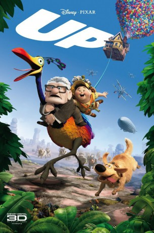

Alternativ: Up
Auszeichnungen: 2 Oscars gewonnen für 3 Oscars nominiert 2 GoldenGlobes gewonnen 1 BAFTA-Awards gewonnen
 
 IMDB-Wertung: 8.3 / 10
IMDB-Wertung: 8.3 / 10  IMDB-TOP-Platzierung: 114
IMDB-TOP-Platzierung: 114  Metascore:
Metascore: 
Carl Fredericksen hat Zeit seines Lebens mit seiner Frau davon geträumt, die Welt zu bereisen, Abenteuer zu erleben und in S��damerika die Paradise Falls zu besuchen. Immer ist etwas dazwischen gekommen. Nach ihrem Tod will der 78-Jährige die Pläne endlich in die Tat umsetzen, zumal sein Häuschen einer neuen Immobilie den Platz räumen soll. Begleitet von dem hartnäckigen Pfadfinder Russell macht er sich auf den Weg – inklusive seines Häuschens, das sich, an zahllosen Ballons aufgehängt, in die Lüfte schwingt ...
Jahr: 2009
Dauer: 96 Minuten
FSK: 0
Land: USA Studio: Walt Disney Studios Motion PicturesTonspuren:
Untertitel:
Auflösung: 1080p (1920x1080) Größe: 5734 MB
Genre: Animation/Trick, Abenteuer, Komödie, Familie
Regisseur: Pete Docter, Bob Peterson
Drehbuch: Pete Docter, Bob Peterson, Tom McCarthy, Bob Peterson, Pete Docter
Soundtrack: Michael Giacchino
Darsteller:
 Edward Asner als Carl Fredricksen
Edward Asner als Carl Fredricksen Christopher Plummer als Charles Muntz
Christopher Plummer als Charles Muntz Bob Peterson als Dug / Alpha
Bob Peterson als Dug / Alpha Delroy Lindo als Beta
Delroy Lindo als Beta John Ratzenberger als Construction Foreman Tom
John Ratzenberger als Construction Foreman Tom David Kaye als Newsreel Announcer
David Kaye als Newsreel Announcer Jess Harnell als Nurse AJ
Jess Harnell als Nurse AJ Pete Docter als Campmaster Strauch
Pete Docter als Campmaster Strauch Bob Bergen als Additional Voices
Bob Bergen als Additional Voices John Cygan als Additional Voices
John Cygan als Additional Voices Paul Eiding als Additional Voices
Paul Eiding als Additional Voices Teresa Ganzel als Additional Voices
Teresa Ganzel als Additional Voices Sherry Lynn als Additional Voices
Sherry Lynn als Additional Voices Laraine Newman als Additional Voices
Laraine Newman als Additional Voices Teddy Newton als Additional Voices
Teddy Newton als Additional Voices Jeff Pidgeon als Additional Voices
Jeff Pidgeon als Additional Voices Donald Fullilove als Nurse George
Donald Fullilove als Nurse George Jan Rabson als Additional Voices
Jan Rabson als Additional VoicesDatei: X:\Kinder Disney HD\2000-2018\Oben (2009, FSKo.Al., 1920x1080) 3D.mkv seit 02.03.2015
Festplatte: Kinder-Filme+Trick
 Es gibt insgesamt 45 Filme in der Gruppe 'Kinder Disney HD\2000-2018'
Es gibt insgesamt 45 Filme in der Gruppe 'Kinder Disney HD\2000-2018'